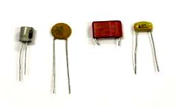

3.3. Condensadores.
Un condensador es un operador electrónico cuya utilidad es la acumulación de carga eléctrica. Básicamente consiste en dos placas metálicas enfrentadas entre sí, y entre las que se las que se introduce determinado material, que se llama dieléctrico, que aumenta la capacidad de almacenamiento de carga eléctrica.
Entre las placas aparece un voltaje, que permite que la carga eléctrica se separe: en una de las placas se guarda carga negativa y en la otra carga positiva.
 El condensador queda caracterizado por la cantidad de carga que puede almacenar, es decir, por la magnitud conocida como capacidad, y que se escribe habitualmente con la letra C. La capacidad del condensador es igual a la carga almacenada en una de las placas dividida por la diferencia de tensión entre las placas (que se puede medir con un polímetro). O sea:
La capacidad del condensador se mide en faradios (F). Pero el faradio es una unidad demasiado grande. Por ello, se utilizan habitualmente unidades más pequeñas:
|
microfaradio |
nanofaradio |
picofaradio |